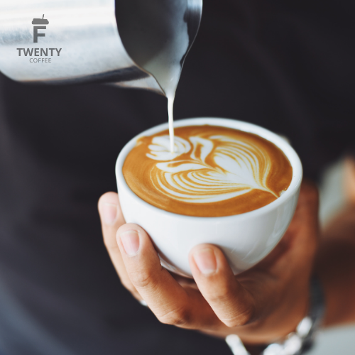
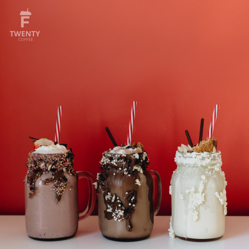
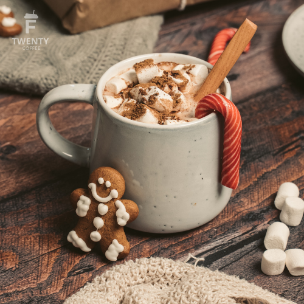
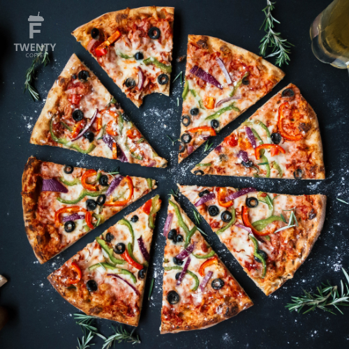
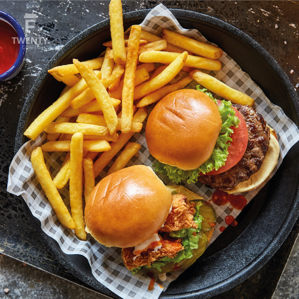
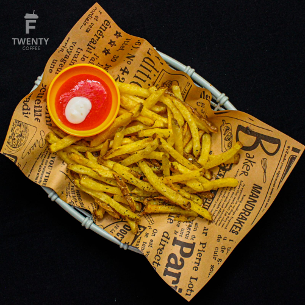

Kopi Fabulous adalah kopi utama yang diracik di F20 Coffee, dengan biji kopi terbaik dari Toraja dan di blend sampai halus ditambah dengan sedikit gula aren yang menjadikan rasanya tidak terlalu pahit. IDR 25k .

Milkshake di F20 Coffee berbeda dari tempat lainnya, karena susu yang digunakan menggunakan susu murni dari peternakan di bogor dan difermentasi selama semalam. IDR 30k.

Hot chocolate sangat enak dinikmati disaat hujan karena dapat menghangatkan badan yang disebabkan dari tambahan sedikit air jahe yang menambah rasa hangat disaat hujan. IDR 28k .

Nasi uduk dari F20 Coffee sangat enak, karena kaya akan rempah - rempah dan banyak lauk didalamnya. Seperti ayam goreng, telur mata sapi, sambal, ikan teri dan campuran kacang goreng beserta timun yang memberikan rasa segar didalamnya. IDR 40K

Pizza yang disajikan dengan sosis, irisan daging sapi, paprika hijau dan paprika merah serta irisan tomat yang dapat menggugah pengunjung yang datang, serta ditembahkan dengan saus tomat dan saus sambal dapat menambah cita rasa pedas dan asam bagi penikmatnya. IDR 38k.

Hamburger tersaji dengan enak baik tampilan serta rasanya, isi dari hamburger ini ada daging sapi, potongan tomat, selada, keju, saus tomat, saus sambal, mayones yang dapat memberikan rasa gurih, asin, pedas, asam, jadi satu dalam sekali gigitan. IDR 35k.

Best seller dari makanan di F20 Coffee adalah kentang goreng, karena kentang yang digoreng dengan temprature yang pas memberikan rasa empuk saat digigit serta diberi taburan bubuk cabai, bbq, sapi pangang yang dapat menambahkan cita rasa. IDR 28k.